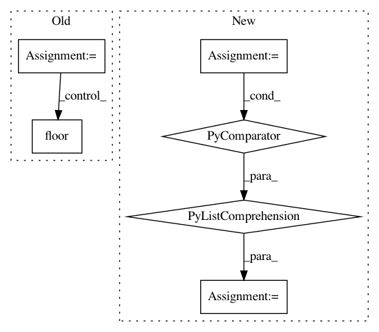

921f172b639a9cc81b9374f5fed9c31a8a396908,enthought/chaco/scales/scales.py,LogScale,ticks,#LogScale#Any#Any#Any#,279
Before Change
return frange(min, max, delta)
elif log_interval < desired_ticks:
for interval in magic_numbers:
ticklist = []
for exp in range(int(floor(log_start)),
int(ceil(log_end))+(interval==1)):
for multiplier in linspace(interval, 10.0,
round(10.0/interval)-(interval==1),
endpoint=(interval != 1)):
tick = 10**exp * multiplier
if start <= tick <= end:
ticklist.append(tick)
elif tick > end:
break
if len(ticklist) < desired_ticks * 1.5:
return ticklist
return ticklist
else:
// Put lines at every power of ten
After Change
magic_numbers = [1, 2, 5]
for interval in magic_numbers:
n1 = self._logtickceil_as_irep(start,interval)
n2 = self._logtickfloor_as_irep(end,interval)
ticks = [self._irep_to_value(n,interval) for n in range(n1,n2+1)]
if len(ticks) < desired_ticks * 1.5:
return ticks
return ticks
In pattern: SUPERPATTERN
Frequency: 3
Non-data size: 6
Instances
Project Name: enthought/chaco
Commit Name: 921f172b639a9cc81b9374f5fed9c31a8a396908
Time: 2009-02-09
Author: warren.weckesser@651a555e-23ca-0310-84fe-ca9f7c59d2ea
File Name: enthought/chaco/scales/scales.py
Class Name: LogScale
Method Name: ticks
Project Name: NifTK/NiftyNet
Commit Name: c8b28432a637a780eed96547260722ff3dede57e
Time: 2017-10-04
Author: wenqi.li@ucl.ac.uk
File Name: niftynet/engine/sampler_selective.py
Class Name:
Method Name: rand_choice_coordinates
Project Name: ilastik/ilastik
Commit Name: f5bc12bdb54dfd6fecc8eb2b70cd294ef52b4f39
Time: 2014-01-03
Author: webmaster@burgerdev.de
File Name: ilastik/applets/thresholdTwoLevels/thresholdTwoLevelsGui.py
Class Name: ThresholdTwoLevelsGui
Method Name: _updateOperatorFromGui